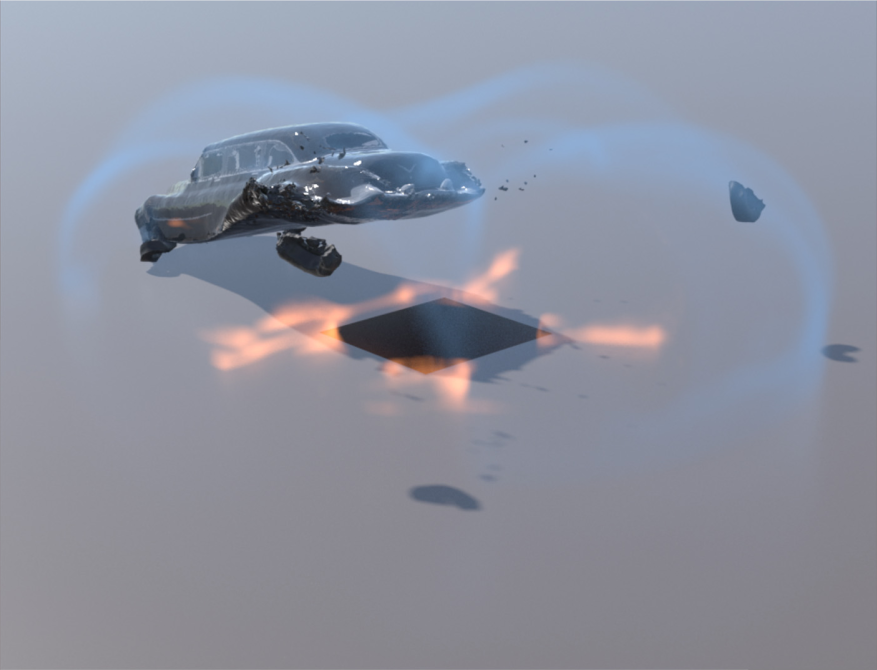

|

|
|
Abstract:
This study presents a new method for modeling the interaction between compressible flow, shock waves, and deformable structures, emphasizing destructive dynamics. Extending advances in time-splitting compressible flow and the Material Point Methods (MPM), we develop a hybrid Eulerian and Lagrangian/Eulerian scheme for monolithic flow-structure interactions. We adopt the second-order WENO scheme to advance the continuity equation. To stably resolve deforming boundaries with sub-cell particles, we propose a blending treatment of reflective and passable boundary conditions inspired by the theory of porous media. The strongly coupled velocity-pressure system is discretized with a new mixed-order finite element formulation employing B-spline shape functions. Shock wave propagation, temperature/density-induced buoyancy effects, and topology changes in solids are unitedly captured.
|

![[PHOTO]](../../images/knight_small.png)